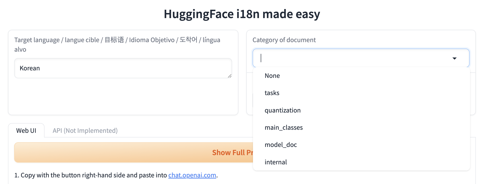
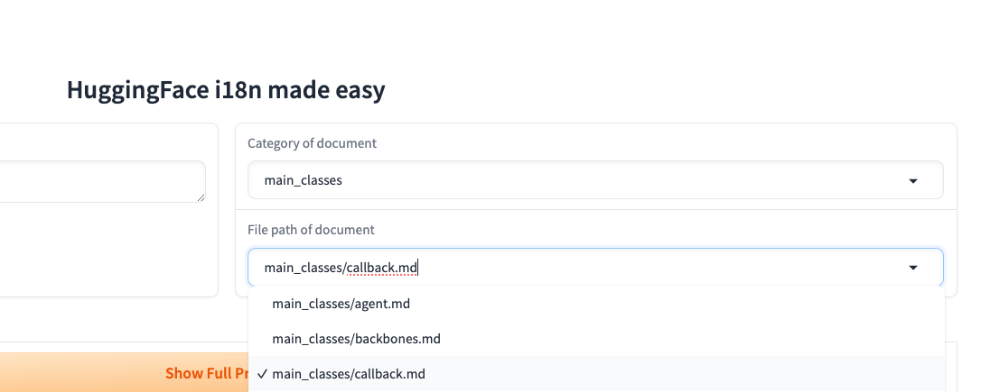
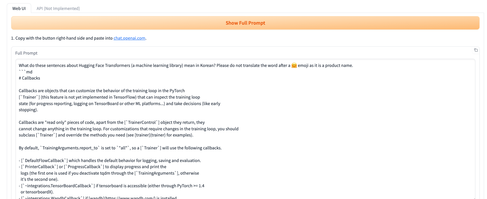
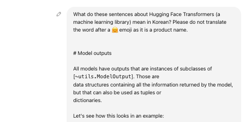
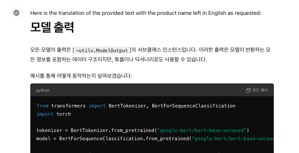
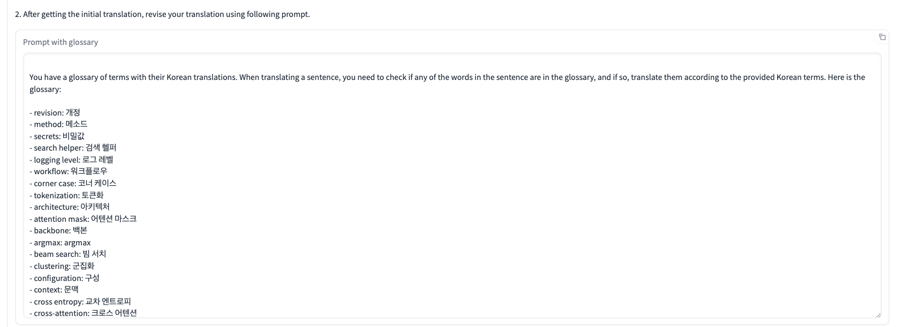
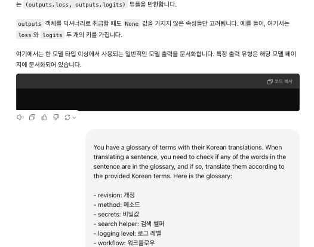
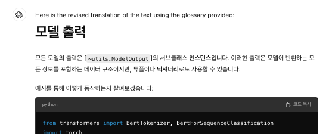
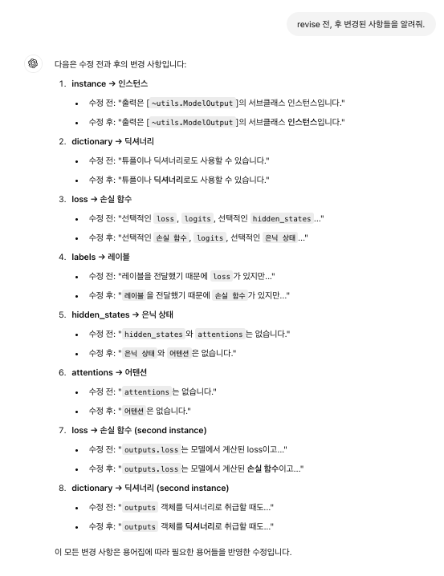
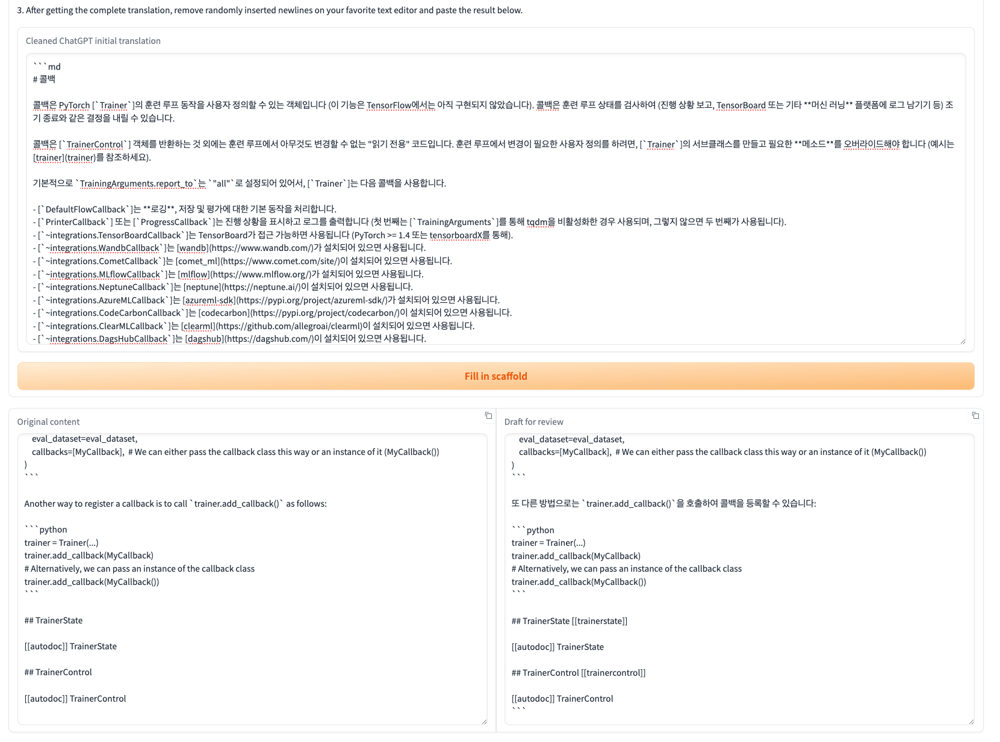

Hugging Face Transformers 한글화 - 초벌 번역기 사용법
- 목차
- 1️⃣ 번역할 문서의 카테고리 선택하기
- 2️⃣ Show full prompt 누르기
- 3️⃣ Glossary를 기반으로 번역 수정하기
- 4️⃣ 수정된 단어 확인하기
- 5️⃣ Fill in scaffold 완료하기
Hugging Face Transformers 문서를 한글로 번역하는 초벌 번역기 사용 방법을 안내하는 가이드입니다. 😊
목차
안녕하세요! Hugging Face Transformers 문서를 한국어로 번역할 때 초벌 번역기를 어떻게 사용하는지 소개해드릴게요. 😊 이 가이드를 따라하면 어렵지 않게 번역을 시작할 수 있습니다! 🎉
1️⃣ 번역할 문서의 카테고리 선택하기
먼저, 번역하고 싶은 문서의 카테고리를 선택해 주세요!
예를 들어, docs/source/en/main_classes/callback.md 파일을 번역하려면, 대분류인 main_classes를 선택해 주세요.

그 다음, 소분류에서 번역할 파일을 선택합니다! 여기서는 callback.md를 선택할 수 있겠죠? 🧐

2️⃣ Show full prompt 누르기
이제 show full prompt 버튼을 눌러주세요. 그럼 번역에 필요한 프롬프트가 나타날 거예요! 📋
이 프롬프트를 복사해주세요.

LLM을 사용하여 기계 번역을 시작합니다. 💪

이제 초벌 번역이 완료되었네요! 🎉
초벌 한글 번역 결과가 나왔어요! 📝

3️⃣ Glossary를 기반으로 번역 수정하기
이제 번역된 내용을 glossary를 참고해 수정해볼게요. 🤔
스페이스에 있는 두 번째 프롬프트를 복사한 후, 초벌 번역이 완료된 LLM 세션 창에서 두 번째 프롬프트를 입력하세요.


수정된 한글 번역 결과를 받을 수 있어요! 😎

4️⃣ 수정된 단어 확인하기
혹시 어떤 단어가 glossary를 기준으로 수정되었는지 알고 싶으신가요? 🧐
그렇다면, 프롬프트에 이렇게 물어보세요: “revise 전, 후 변경된 사항들을 알려줘.”
그럼 LLM 세션 창에서 바로 답을 받을 수 있답니다! 💬

5️⃣ Fill in scaffold 완료하기
이제 Fill in scaffold 단계를 진행해볼까요? 😊 번역된 결과를 스페이스에 붙여넣고, Fill in scaffold 버튼을 눌러주세요. 그러면 scaffold가 포함된 최종 번역본을 얻을 수 있어요! 🚀

이제 모든 번역 작업이 완료되었습니다! 🎉 수고 많으셨어요! 😄 Hugging Face의 멋진 번역 커뮤니티에 기여해 주셔서 감사드려요. 👐

열린 프로젝트


Grabette: 로봇-조작 데이터를 기록하기 위한 오픈 시스템.
*함께 공유 데이터셋을 구축합니다.*
이 글은 Hugging Face 블로그의 Grabette: an open system to record robot-manipulation data를 한국어로 번역한...

네이티브-스피드 vLLM transformers 모델링 백엔드
이 글은 Hugging Face 블로그의 Native-speed vLLM transformers modeling backend를 한국어로 번역한 글입니다.

Hugging Face와 Cerebras가 Gemma 4를 실시간 음성 AI로 선보입니다
이 글은 Hugging Face 블로그의 Hugging Face and Cerebras bring Gemma 4 to real-time voice...

HF Jobs에서 vLLM 서버를 한 명령으로 실행하기
이 글은 Hugging Face 블로그의 Run a vLLM Server on HF Jobs in One Command를...

FFASR Leaderboard 소개: 현실 세계에서의 ASR 벤치마크
이 글은 Hugging Face 블로그의 Introducing the FFASR Leaderboard: Benchmarking ASR in the Real World를...

Transformers.js에서 제안된 Cross-Origin Storage API 실험하기
이 글은 Hugging Face 블로그의 Experimenting with the proposed Cross-Origin Storage API in Transformers.js를 한국어로...

Beyond LoRA: 가장 인기 있는 미세조정 기법을 이길 수 있을까?
이 글은 Hugging Face 블로그의 Beyond LoRA: Can you beat the most popular fine-tuning technique?를...

오픈 소스 커뮤니티는 Agentic RL을 위한 OpenEnv를 뒷받침하고 있습니다
이 글은 Hugging Face 블로그의 The Open Source Community is backing OpenEnv for Agentic RL를...

Reachy Mini를 로컬에서 완전히 실행하기
이 글은 Hugging Face 블로그의 Reachy Mini goes fully local를 한국어로 번역한 글입니다.

PaddleOCR 3.5: Transformers 백엔드를 활용한 OCR 및 문서 파싱 작업 실행
이 글은 Hugging Face 블로그의 PaddleOCR 3.5: Running OCR and Document Parsing Tasks with a...